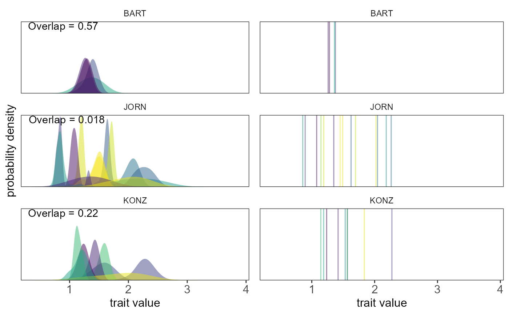

This function plots the overlap of traits among species for each community. If there are multiple traits, each trait is plotted separately in one-dimensional space.
Ostats_plot(
plots,
sp,
traits,
overlap_dat = NULL,
use_plots = NULL,
n_col = 1,
scale = "fixed",
colorvalues = NULL,
alpha = 0.5,
adjust = 2,
bin_width = 1,
limits_x = NULL,
legend = FALSE,
name_x = "trait value",
name_y = "probability density",
normalize = TRUE,
means = FALSE,
circular = FALSE,
discrete = FALSE,
circular_args = list()
)Site identity: a vector of names of each community.
Taxon identity: a vector of species or taxa names.
A vector of trait measurements for each individual, or a matrix or data frame with rows representing individuals and columns representing traits.
Optional: an object containing the output of Ostats.
If provided, overlap statistics will be displayed in the plot panels.
a vector of sites to plot. If NULL, the function will plot all the sites.
Number of columns for layout of individual panels. Default is 1.
If you want the scale of x, y or both x and y axis to be independent,
set the argument to "free_x", "free_y" or "free" respectively.
Default = "fixed" which uses the same scale across all sites.
See facet_grid.
Vector of color values for the density polygons. Defaults to a viridis palette if none provided.
defines the transparency level for the density polygons. Default is 0.5.
the bandwidth adjustment of the density polygons. Default is 2.
See density. Only used if discrete = FALSE.
the width of each bin of the histograms. Default is 1.
Only used if discrete = TRUE.
Vector of length 2, with multiplicative factor to apply to the minimum
and maximum values of each trait to expand the limits of the x axis.
Default is c(0.5, 1.5), or 0.5 times the minimum and 1.5 times the maximum
value of each trait, for continuous traits. For discrete traits the default is
c(1, 1) or no expansion of limits.
Whether to include a legend. Defaults to FALSE.
x-axis label. Default is 'trait value'
y-axis label. Default is 'probability density'
if TRUE, areas of density plots are normalized to be equal
across taxa; if FALSE, areas will be proportional to abundance.
Default is TRUE.
if TRUE, trait means for each species are plotted in an additional plot
column next to the traits distribution plots for each site. Default is FALSE.
if TRUE, plots density plots or histograms using polar
coordinates, and estimates density using method for objects of class
circular. Default is FALSE.
if TRUE, plots histograms at discrete trait values instead
of smooth kernel density plots. Default is FALSE.
optional list of additional arguments to pass to
circular. Only used if circular = TRUE and
discrete = FALSE. If no arguments are provided, default arguments to
circular are used.
Density plots of species trait distributions plotted together
for each community to show how they overlap each other. Each community
is plotted on a separate panel within a multipanel figure.
The overlap value obtained as output from Ostats
is labelled on each community graph, if provided by the user.
If trait values are discrete rather than continuous, histograms are plotted instead of kernel density plots.
If trait values are circular, a circular kernel density estimate for each species is plotted on a polar coordinate plot. If trait values are both circular and discrete, a "sunburst" plot is returned.
The class of the returned object is Ostats_plot_object. Calling
print on this object will draw the plot using
If more than one trait is provided, a list of objects of class
Ostats_plot_object will be returned.
Ostats to Calculate O-statistics (community-level
pairwise niche overlap statistics)
# set the arguments:
plots <- small_mammal_data$siteID
sp <- small_mammal_data$taxonID
traits <- log10(small_mammal_data$weight)
# to plot only selected sites:
use_plots <- c('BART','KONZ','JORN')
Ostats_plot(plots = plots, sp = sp, traits = traits,
overlap_dat = small_mammal_Ostats,
use_plots = use_plots, means = TRUE)
#> Warning: Removed 61 rows containing non-finite values (stat_density).
#> Warning: Groups with fewer than two data points have been dropped.
#> Warning: Groups with fewer than two data points have been dropped.
#> Warning: no non-missing arguments to max; returning -Inf
#> Warning: no non-missing arguments to max; returning -Inf
#> Warning: Removed 2 rows containing missing values.
